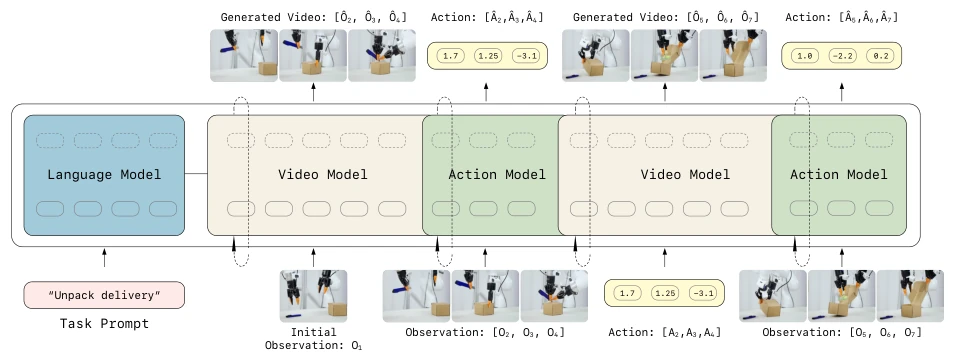
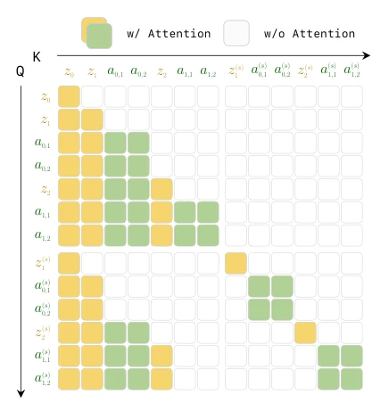
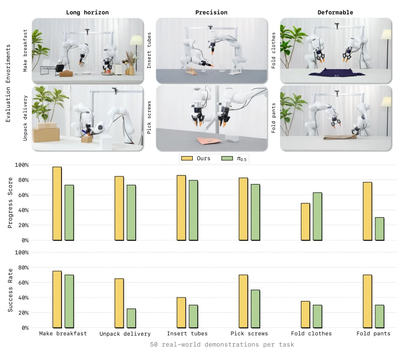
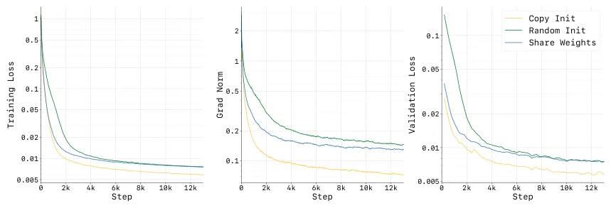
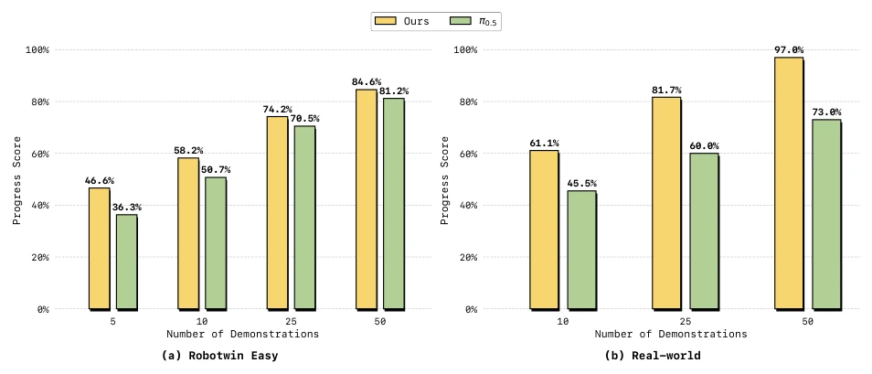
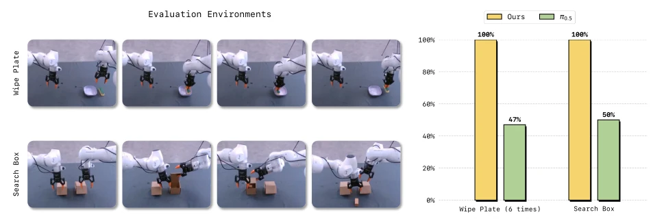
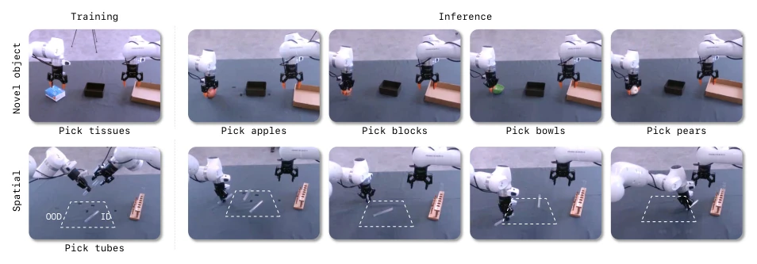

Figure 1. LingBot-VA : An Autoregressive World Model for Robotic Manipulation. (1) Pretraining: LingBot-VA is pretrained on diverse in-the-wild videos and robot action data, enabling strong generalization across scenes and objects. (2) Comprehensive Evaluation: We conduct extensive experiments on real-world tasks (long-horizon, deformable objects, and precision manipulation) and simulation benchmarks, significantly outperforming state-of-the-art methods including π0.5. (3) Versatile Capabilities: Beyond policy learning, our model supports visual dynamics prediction and inverse dynamics inference from robot videos. (4) Emergent Properties: Our causal world modeling approach exhibits long-range temporal memory and strong few-shot adaptation ability.

Figure 2. Framework overview: LingBot-VA is conditioned by autoregressive diffusion for unified video-action world modeling. We leverage a dual-stream Mixture-of-Transformers (MoT) architecture that interleaves video and action tokens within a single sequence. At each autoregressive step, the video stream (initialized from Wan2.2-5B) first predicts future latent visual states via flow matching. Then the action stream decodes corresponding actions through inverse dynamics conditioning on the predicted visual transitions.

Figure 3. Teacher Forcing Attention Mask: Causal attention mask for unified video-action pretraining. Each token can only attend to preceding tokens in the temporal sequence.

Figure 5. Real-world deployment results. We evaluate LingBot-VA on six manipulation tasks across three categories: long- horizon tasks (Make Breakfast, Pick Screws), precision tasks (Insert Tubes, Unpack Delivery), and deformable & articulated object manipulation (Fold Clothes, Fold Pants). Our method achieves state-of-the-art performance on both metrics.
Figure 6. Detailed task progressions and key execution steps of the six real-world tasks. Each task involves a sequence of manipulation primitives, with scoring criteria detailed in Tables S2 through S4.

Figure 7. Training dynamic comparison between different action network initialization streategy: Random initialization leads to unstable optimization (high gradient norms) and slow convergence. Although re-using video network weights stabilizes training, the resulting performance is not optimal. Our approach, which initializes by copying pretrained video weights with proper scaling, proves to be the most effective, ensuring smooth training dynamics and faster convergence.

Figure 8. Sample efficiency comparison. LingBot-VA consistently outperforms π0.5 across various data regimes on the “Make Breakfast” task, demonstrating superior data efficiency in the post-training stage.

Figure 9. Temporal memory evaluation. Left: Success rates on two memory tasks (Wipe Plate and Search Box). LingBot-VA significantly outperforms π0.5 on both tasks, demonstrating superior temporal state tracking ability. Right: Visualization of evaluation environments.

Figure 10. Novel object and spatial generalization. LingBot-VA successfully generalizes to objects with varying shapes, textures, and positions.